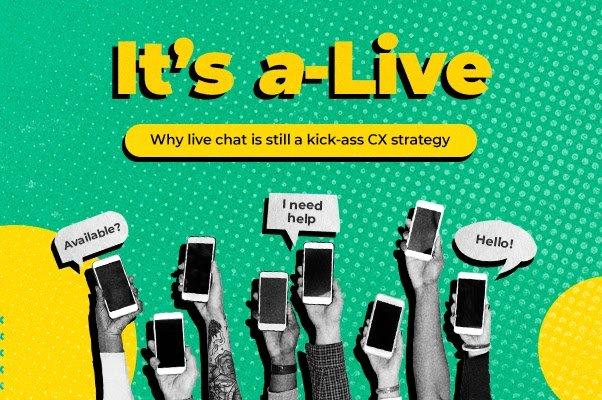
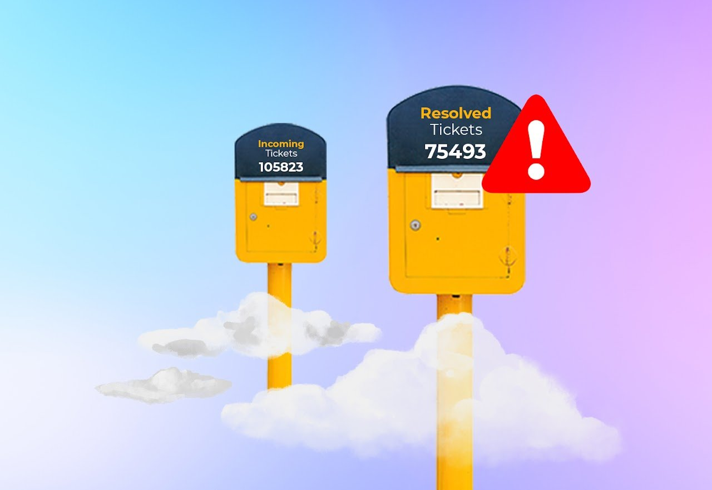

Perspectives on human-first customer experience.
Long-form thinking on CX, contact centers, live chat, and the shift from customers to humans. Free to read. No gating.
Whitepapers
Opinion, research, and strategy — written for people who actually build CX teams.
Metamorphosis of CX: The Human Experience
Customer-centric businesses may miss out on forging meaningful connections with humans.
Read the whitepaper
Don’t just take calls. Build connections.
Perfect scorecards may not always translate into meaningful relationships with customers.
Read the whitepaper
Is the customer always right?
The “gospel truth” is a common cliché.
Read the whitepaper
It’s a-Live: Why live chat is still a kick-ass CX strategy
Live chat is far from dead; in fact, it still is a force to reckon with in the CX world.
Read the whitepaper
How to clear a ticket backlog
Backlogs can be intimidating and pressure-inducing for the whole team. But things aren’t that bleak.
Read the whitepaperCase Studies
Real stories from our agents and the customers whose days they’ve changed.